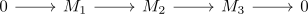

short exact sequence and torsion
Proposition
Let \(R\) be a ring, $M_1,M_2,M_3$ \(R\)-modules and $r_1,r_2$ elements in $R$.
Suppose

is a short exact sequence and
- each element in $M_1$ is \(r_1\)-torsion,
- each element in $M_3$ is \(r_2\)-torsion.
Then each element in $M_2$ is $r_1 \cdot r_2$ torsion.
Proof
Let $m$ be an element in $M_2$. Then $r_2 \cdot m$ lies in the kernel of $M_2 \rightarrow M_3$, so in particular is an $r_1$ torsion element.